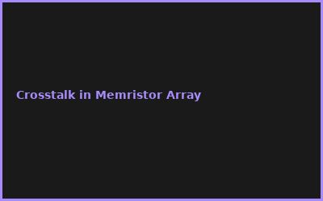
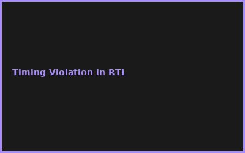
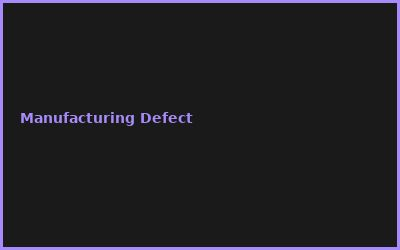

Kapitel 1: Neuromorphic Architecture
- Spiking Neural Networks (SNNs)
- Memristor Crossbar Arrays
- Event-Driven Processing
- Low-Power Design Principles
Kapitel 2: RTL & HDL Design
// Verilog: Spiking Neuron
module neuron(
input clk, input [7:0] input_current,
output spike
);
reg [15:0] membrane_potential;
// ...
Kapitel 3: FPGA Prototyping
- Xilinx/Altera FPGA Selection
- Hardware Synthesis & Place & Route
- Performance Profiling
- Power Analysis Tools
Kapitel 4: Silicon Tape-Out
- ASIC Design Flow (Cadence/Synopsys)
- Physical Design & Routing
- DFT (Design for Test)
- Lithography & Manufacturing
Kapitel 5: Verification & Simulation
- Behavioral Simulation
- Post-Layout Timing Verification
- Power Simulation (Static/Dynamic)
- Corner Analysis (PVT)
Kapitel 6: Deployment & Optimization
- Chip Packaging & Testing
- Thermal Management
- Firmware Integration
- Production Yield Optimization
💡 PRO-TIPPS
🎯 Tipp: FPGA vor Tape-Out testen
Problem: Silicon Fehler = Millionen Verlust | Lösung: Vollständige FPGA Validation vor ASIC
💰 BUDGET-HACKS (95% KOSTENLOS!)
💰 Hack: OpenSource EDA Tools
Original: Cadence/Synopsys Suite: €500K+/Jahr | Hack: OpenLane + Sky130 PDK: €0 | Einsparnis: 100%
⚠️ FEHLER
❌ Fehler: Design nicht für Yield ausgelegt
Was passiert: 80% Ausschussrate in Produktion | ✅ Lösung: DFM Checks + Redundanz einplanen
🌐 COMMUNITY
OpenLane Community, RISC-V Foundation, ChipIgnite, EDA Tool Developers
📸 Fehler-Galerie (häufige Probleme visualisiert)


